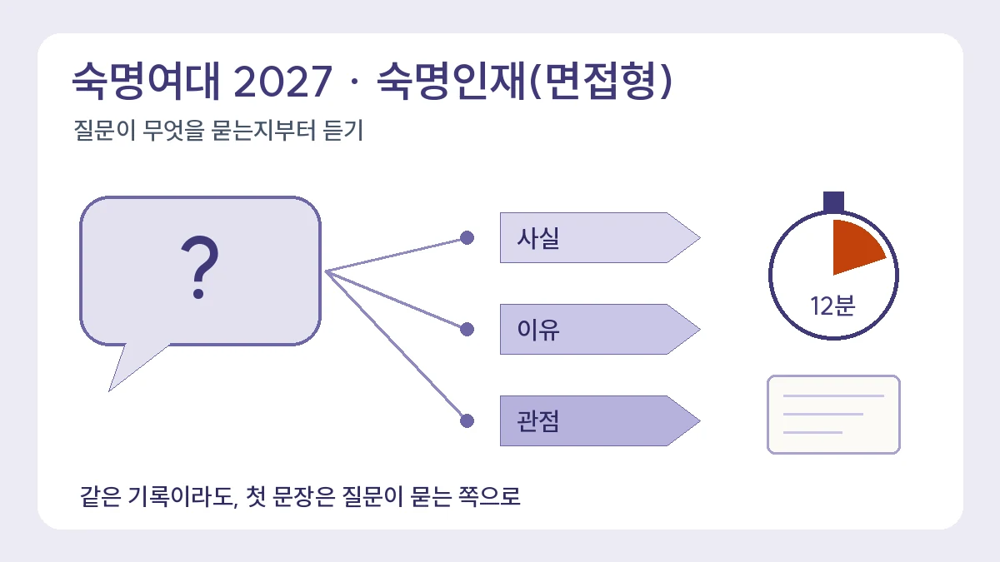

숙명여대 2027 숙명인재(면접형), ‘질문 의도 파악’은 무엇을 연습하라는 뜻일까?
숙명여대 2027 숙명인재(면접형) 면접의 공개된 방식(평가위원 2인·블라인드·12분 내외 제출서류 기반 심층면접)과 4배수·70:30 변경, 11월 19일 발표부터 28·29일 면접까지의 일정을 모집요강 기준으로 정리하고, 평가항목의 ‘질문 의도 파악’을 학생부 문장별 질문 방향 구분과 첫 문장 답변 연습으로 옮긴 교육용 사례를 제안합니다.

숙명여자대학교 2027학년도 학생부종합전형 숙명인재(면접형)전형 지원자를 위한 면접 준비 안내입니다. 면접 방식은 2026년 5월 29일 공지된 2027학년도 수시모집 모집요강에, 모집단위별 면접일은 2026년 7월 22일 입학처 공지에 이미 공개된 내용이며 오늘 새로 발표된 소식이 아닙니다.[1][2][3] 1단계 합격자 발표는 11월 19일(목) 18시로 예정돼 있고, 이 글은 그 발표 전에 썼습니다.[1] 2027학년도는 2026년 입시 시즌에 준비하는 전형이며, 2028학년도 자료를 대신 적용하지 않습니다.
“질문 의도 파악이 평가된다는데, 그럼 무엇을 연습해야 하나요?” 숙명여대 모집요강은 면접의 평가항목 가운데 하나인 의사소통능력을 설명하며 괄호 안에 ‘질문 의도 파악, 정보 전달력’을 적어 두었습니다.[1] 이 글은 예상 질문 목록이 아니라, 학생부 문장 하나에 붙을 수 있는 질문의 방향을 구분하고, 첫 문장에서 그 방향에 답하는 연습을 다룹니다. 앞선 이화여대 해설이 학생부 속 개념을 정확히 정의하는 문제였고 중앙대 해설이 평가 비율을 답변 시간표로 오독하지 않는 문제였다면, 이번에는 같은 기록을 두고도 질문마다 답의 출발점이 달라지는 문제입니다.
무엇이 공개돼 있나: 12분 내외의 제출서류 기반 심층면접
모집요강은 숙명인재(면접형)전형 면접을 평가위원 2인의 개별면접, 지원자 개인정보(성명, 수험번호, 출신고교명 등)를 제공하지 않는 블라인드 면접, 12분 내외의 제출서류 기반 면접으로 안내합니다.[1] 면접은 제출서류 내용을 확인하고 진로역량, 의사소통능력 및 태도 등을 종합적으로 평가하는 심층면접입니다.[1]
- 진로역량: 진로(전공/계열) 탐색 및 선택과정, 관심과 적성, 발전가능성, 이해력 및 논리적 사고력, 다양한 시각 및 관점을 봅니다.[1]
- 의사소통능력 및 태도: 의사소통능력(질문 의도 파악, 정보 전달력 등)과 태도(면접 태도, 협력, 성실성 등)를 봅니다.[1]
모집요강은 표에 적은 주요 활용 영역 외에도 학교생활기록부의 모든 내용을 면접평가에 활용한다고 밝힙니다.[1] 세특에 적힌 탐구 한 줄뿐 아니라 창체·행동특성 기록도 질문의 출발점이 될 수 있다는 뜻입니다.
적용 범위와 2027학년도 변경점
대상은 2027학년도 숙명인재(면접형)전형 1단계 합격자입니다. 모집인원은 2026학년도 391명에서 361명으로 줄었고, 1단계 선발배수는 3배수에서 4배수로, 2단계 전형방법은 1단계 성적 60%+면접 40%에서 1단계 성적 70%+면접 30%로 바뀌었습니다.[1] 1단계 서류평가는 진로역량 450점, 탐구역량 350점, 공동체역량 200점으로 구성됩니다.[1] 모집요강의 면접평가 공통사항은 소프트웨어인재전형과 특수교육대상자전형에도 같은 면접 유형을 적용하므로, 두 전형 지원자도 아래 연습을 활용할 수 있습니다. 다만 특수교육대상자전형은 면접 과정을 녹화한다는 안내가 추가돼 있습니다.[1]
면접 비율이 40%에서 30%로 줄었다는 사실만으로 면접의 영향이 작아졌다고 단정할 수는 없습니다. 대학은 단계별 점수 분포를 공개하지 않았고, 이 글도 비율 변화가 합격에 미치는 효과를 추정하지 않습니다. 확실한 것은 면접평가에 결시하면 불합격 처리된다는 점입니다.[1]
일정: 발표 시각, 전형료 납부, 모집단위별 면접일
- 1단계 합격자 발표와 2단계 전형료 납부: 2026년 11월 19일(목) 18시부터 11월 20일(금) 17시까지, 입학처 홈페이지에서 진행합니다.[1] 1단계 합격 여부를 확인하고 2단계 전형료를 내지 않으면 2단계 시험에 응시할 수 없고 불합격 처리됩니다.[1]
- 수험생 유의사항 및 시험장 안내: 2026년 11월 24일(화) 17시 입학처 홈페이지에 공지되며, 자세한 면접 일정과 대기실 안내를 이때 확인할 수 있습니다.[1][2]
- 면접일: 숙명인재(면접형)는 11월 28일(토)과 29일(일) 가운데 모집단위별로 정해져 있고, 면접일시는 변경할 수 없습니다.[2] 예를 들어 7월 22일 공지 이미지에는 경영학부·글로벌협력전공·앙트러프러너십전공·영어영문학전공·테슬(TESL)전공·미디어학부와 자연계 모집단위가 29일로 표시돼 있습니다.[2] 자기 모집단위는 공지 원문에서 직접 확인하세요. 소프트웨어인재전형(인공지능공학부·컴퓨터과학전공·데이터사이언스전공)은 28일입니다.[2]
- 최초 합격자 발표: 2026년 12월 18일(금) 17시입니다.[1]
개인별 입실 시각은 아직 공개되지 않았습니다. 11월 24일 공지를 확인하기 전까지 시간대를 짐작해 다른 일정을 확정하지 않는 편이 안전합니다.
탐구보고서·세특과의 관계: 같은 기록, 다른 질문 방향
진로역량의 ‘이해력 및 논리적 사고력’과 ‘다양한 시각 및 관점’은 탐구보고서 기록과 직접 맞닿습니다.[1] 세특에 “자료를 비교해 결론을 냈다”는 한 줄이 있다면, 면접에서는 그 한 줄을 두고 여러 방향의 질문이 나올 수 있습니다. 대학은 실제 질문 예시나 채점 기준을 이 모집요강에 공개하지 않았으므로, 아래 분류는 학생부 문장을 연습하기 위해 편집팀이 만든 연습용 틀입니다.
- 사실형 — “무엇을 했나요?” 활동의 범위, 자료, 나의 역할을 묻습니다. 첫 문장은 구체적인 행동입니다.
- 이유형 — “왜 그 방법을 골랐나요?” 선택의 근거를 묻습니다. 첫 문장은 이유이고, 활동 소개를 다시 처음부터 하지 않습니다.
- 개념형 — “그 용어는 무엇인가요?” 이해를 묻습니다. 첫 문장은 내 말로 한 정의입니다.
- 관점형 — “다르게 볼 수도 있지 않나요?” 다른 해석이나 반론을 다룰 수 있는지 묻습니다. 첫 문장은 상대 관점이 맞는 지점을 인정하는 말입니다.
- 다음 단계형 — “다시 한다면 무엇을 바꾸겠어요?” 한계 인식과 발전 방향을 묻습니다. 첫 문장은 바꿀 한 가지입니다.
질문 의도를 놓친 답변은 대개 질문 유형과 상관없이 같은 준비 문장으로 시작합니다. 연습할 때는 질문을 들은 뒤 속으로 “이 질문이 묻는 것은 ○○다”를 한 마디로 정하고, 그 ○○에 해당하는 말을 첫 문장에 두는 데 집중하세요. 질문 범위가 정말 모호하다면 “활동 전체를 말씀드릴까요, 방법을 고른 이유를 말씀드릴까요?”처럼 짧게 확인하는 방법도 있습니다. 대학이 이런 확인을 어떻게 평가하는지 공개한 자료는 없으므로, 습관적으로 되묻기보다 꼭 필요할 때 한 번 쓰는 정도를 권합니다.
교육용 가상 사례: 같은 기록, 이유형 질문
다음은 편집팀이 만든 교육용 가상 사례입니다. 실제 학생부·면접 후기나 숙명여대의 공개 문항을 옮긴 것이 아니며, 실제로 수행된 탐구라는 뜻도 아닙니다. 수치도 계산 연습을 위해 지어낸 값입니다.
가상 기록 문장
확률과 통계 수업에서 등굣길 버스의 배차 간격 자료를 모아 평균과 중앙값을 비교하고, 대표값 선택에 따라 결론이 달라질 수 있음을 발표함.
가상 질문(이유형)
평균만 보지 않고 중앙값을 함께 본 이유가 있나요?
의도를 놓친 답변
저는 도시 교통 문제에 관심이 많아서 이 탐구를 시작했습니다. 일주일 동안 버스 정류장에서 배차 간격을 기록했고, 평균과 중앙값을 구해서 발표했습니다. 이 활동으로 통계에 흥미를 느끼게 됐습니다.
이 답변은 활동 소개로서는 틀린 곳이 없지만, 질문이 물은 ‘왜 중앙값을 함께 봤는가’에는 끝까지 답하지 않습니다. 같은 학생부 문장에서 사실형 질문에 쓸 답을 이유형 질문에 그대로 꺼낸 경우입니다.
의도에 맞춘 답변 — 가상 설정에서 가능한 설명
극단적으로 긴 간격 하나가 평균을 끌어올렸기 때문입니다. 가상의 기록으로 설명하면, 배차 간격이 8, 9, 10, 10, 11, 12, 40분이었을 때 평균은 약 14.3분이지만 중앙값은 10분입니다. 일곱 번 가운데 여섯 번은 12분 이하였는데 평균만 보면 ‘보통 14분 넘게 기다린다’고 오해할 수 있어서, 평소 경험에 가까운 값으로 중앙값을 함께 제시했습니다. 다만 40분처럼 긴 간격이 얼마나 자주 생기는지는 일주일 자료로는 판단할 수 없었습니다.
첫 문장이 곧 이유이고, 숫자 예시는 그 이유를 뒷받침하며, 마지막 문장은 자료가 말해 주지 못하는 범위를 구분합니다. 여기에 관점형 꼬리질문(“그럼 평균은 쓸모없나요?”)이 이어진다면, 평균은 긴 간격까지 포함한 전체 기다림의 크기를 반영하므로 버리지 않고 두 값을 함께 본 것이라고 상대 관점이 맞는 지점부터 답할 수 있습니다. 위 수치는 일곱 값의 합 100분을 7로 나눈 값(약 14.29분)과 크기순 네 번째 값(10분)으로 계산했습니다.
지금 할 일
- 11월 19일(목) 18시 이후: 1단계 결과를 확인하고, 합격했다면 11월 20일(금) 17시까지 2단계 전형료를 납부하세요. 미납하면 면접에 응시할 수 없습니다.[1]
- 면접일 확인: 7월 22일 공지에서 자기 모집단위가 28일인지 29일인지 확인하세요. 면접일시는 바꿀 수 없으므로 다른 대학 일정과 겹치는지 먼저 점검하세요.[2]
- 면접 전까지: 학생부에서 세특·창체·행동특성 기록을 서너 줄 고르고, 줄마다 위 다섯 방향의 질문을 하나씩 만들어 첫 문장만 소리 내어 답해 보세요. 12분 모의면접을 녹음했다면 답마다 ‘첫 문장이 질문에 답했는가’만 따로 표시해 보는 것도 방법입니다. 이 방식은 편집팀의 연습 제안이며 대학이 정한 형식이 아닙니다.
- 11월 24일(화) 17시: 수험생 유의사항과 시험장·대기실 안내를 저장하고, 준비물과 입실 시각을 확인하세요.[1][2]
- 당일: 교복이나 개인정보를 확인할 수 있는 복장은 입을 수 없고, 답변에 이름·출신고교명·부모(친인척 포함)의 실명이나 직업명·직장명·직위명을 넣으면 안 됩니다.[1] 휴대전화·스마트워치 등 전자기기는 시험 시작 전에 감독위원 지시에 따라 보관하거나 제출해야 합니다.[1]
불확실성과 다음 확인 시점
이번 확인은 입학처 수시 모집요강 메뉴의 2027학년도 수시모집 모집요강 PDF, 5월 29일 모집요강 공지, 7월 22일 면접일정 공지(이미지)에 한정됩니다. 2026년 11월 15일 오전 현재 입학처 수시모집 공지사항 목록에서 숙명인재(면접형) 면접 방식에 관한 별도 수정 공지는 확인되지 않았습니다. 대학은 변경사항이 생기면 입학처 홈페이지에 공지한다고 안내하므로, 11월 24일 수험생 유의사항이 당일 운영의 최종 기준입니다.[3][1]
‘질문 의도 파악’이 평가항목에 적혀 있다는 사실만으로 특정 질문이 나온다거나 특정 답변 방식이 더 높은 점수를 받는다고 단정할 수 없습니다. 이 글의 질문 분류와 가상 사례는 연습 도구일 뿐 실제 질문이나 점수·합격을 예측하지 않으며, 다른 대학·전형에는 해당 공식 자료를 다시 확인해야 합니다.
관련 기존 가이드
- 학생부 기반 면접 준비 가이드 — 학생부 전체를 복기하는 기본 틀로 사용하세요.
- 면접 꼬리질문 점검표 — 첫 답 다음에 이어지는 질문을 점검할 때 함께 보세요.
- 이화여대 2027 개념 정의 해설 — 개념형 질문에서 내 말로 정의하는 연습을 참고하세요.
- 서울시립대 2027 블라인드 면접 해설 — 학교명·신상정보 없이 학습 근거를 설명하는 연습에 활용하세요.
공식 출처와 확인 범위
- [1] 숙명여자대학교 2027학년도 수시모집 모집요강(PDF, 입학처 수시 모집요강 메뉴)
- [2] 숙명여자대학교 입학처, 2027학년도 수시모집 학생부종합전형 면접시험 일정 안내(2026.07.22 게시)
- [3] 숙명여자대학교 입학처, 2027학년도 수시모집 모집요강 공지(2026.05.29 게시)
모집요강은 PDF 5쪽의 수시모집 주요 변경사항, PDF 12쪽(책자 8쪽)의 수험생 유의사항, PDF 18~19쪽(책자 14~15쪽)의 숙명인재(면접형)전형 일정·전형방법·평가방법, PDF 50~51쪽(책자 46~47쪽)의 면접평가 주요사항과 평가항목, PDF 54쪽의 결시자 처리 기준을 확인했습니다. 7월 22일 면접일정 공지는 본문이 이미지로만 게시돼 있어 편집팀이 화면을 직접 읽어 확인했으며, 자동 추출한 텍스트가 아닙니다. 공식 문항·도표·PDF는 재게시하지 않았고 질문 분류·가상 사례·일러스트는 독립적으로 작성했습니다.
이 칼럼은 운영자의 관점과 일반 교육 정보를 담고 있으며 특정 대학 합격이나 평가 결과를 보장하지 않습니다.
함께 볼 글

학생부 기반 면접 준비: 영역별 활동 복기와 꼬리질문·STAR·PREPNEW
세특·창체·공동체 활동을 동기·과정·결과·성찰로 정리하고 실제 기여와 한계를 설명하는 서류 기반 면접 연습법입니다.

학생부 기반 대입 면접 꼬리질문 점검표: 주장·근거·한계 연결하기NEW
보고서의 핵심 주장에 조건과 반대 질문을 붙여, 근거를 찾을 수 있는 답변과 아직 확인하지 못한 답변을 구분합니다.
학생부 기반 면접, 탐침질문에 흔들리지 않는 답변법: 동기·과정·결과·성찰로 설명하기NEW
학생부에 적힌 탐구와 활동을 단순 암기가 아닌 자신의 경험으로 설명하기 위해, 동기·과정·결과·성찰의 네 단계와 탐침질문 대응법을 안내합니다.